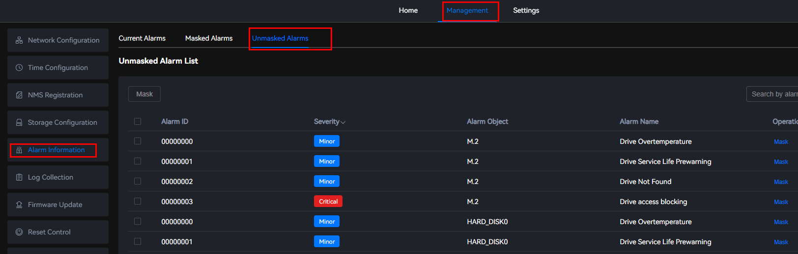
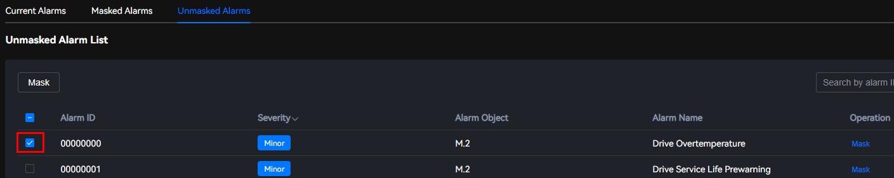
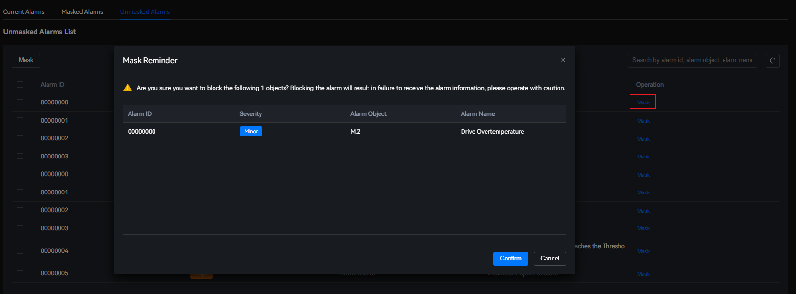

Scenarios
In the initial state, you can view all alarms in the system on this page. If you want to ignore some alarms, perform the following operations to mask the alarms. The masked alarms will not be displayed on the Current Alarms page.
Masking Alarms
- Choose
The Unmasked Alarms page is displayed. You can view the number of alarms, alarm IDs, severities, alarm objects, and alarm names.
Figure 1 Unmasked alarms
 - Select
 in the row that contains the target alarm.Figure 2 Selecting alarms
in the row that contains the target alarm.Figure 2 Selecting alarms
 - Click Mask. A confirmation dialog box is displayed.Figure 3 Masking alarms
 - Click Confirm.